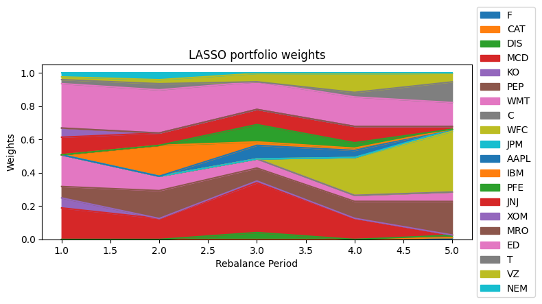

Research Question 研究问题
I compared four ways to estimate expected returns and covariance matrices before feeding them into a long-only mean-variance optimizer. The practical question was simple: should a portfolio team prefer the model that explains the past best, or the model that gives more reliable inputs for the next rebalance? 我比较了四种估计预期收益和协方差矩阵的方法，然后把这些输入放进 long-only mean-variance optimizer。核心问题很直接：投资组合团队应该选择样本内解释力最高的模型，还是选择能在下一期再平衡中提供更稳定输入的模型？
Data
The universe contains 20 U.S. stocks across consumer, industrial, financial, technology, health care, energy, utilities, telecom, and materials sectors. I used monthly adjusted closing prices from December 2005 to December 2016 and converted them into excess returns after subtracting the monthly risk-free rate. 股票池包含 20 只美国股票，覆盖消费、工业、金融、科技、医药、能源、公用事业、电信和材料等行业。我使用 2005 年 12 月到 2016 年 12 月的月度复权收盘价，并扣除月度无风险利率得到超额收益。
| Item | Setup | Why it matters |
|---|---|---|
| Assets | 20 stocks | Same investable universe for every model. |
| Factors | Mkt RF, SMB, HML, RMW, CMA, Mom, ST Rev, LT Rev | OLS, LASSO, and BSS use the full eight-factor set; FF uses the first three. |
| Calibration | 48 monthly observations | Each model is estimated on a rolling four-year window. |
| Test window | 2012-2016, annual rebalance | Performance is measured out of sample, not on the fitted window. |
Method 方法
Each stock's excess return is explained by factor exposures. After estimation, the fitted intercepts, factor loadings, factor means, factor covariance, and residual variances are converted into the two MVO inputs: \( \mu \) and \( Q \). 每只股票的超额收益由因子暴露解释。模型估计完成后，截距、因子载荷、因子均值、因子协方差和残差方差会被转换成 MVO 需要的两个输入：\( \mu \) 和 \( Q \)。
I then solved the same long-only MVO problem for every model, so the comparison stays fair. The only thing changing is the way \( \mu \) and \( Q \) are estimated. 接下来，每个模型都进入同一个 long-only MVO 问题，因此比较是公平的。真正变化的只有 \( \mu \) 和 \( Q \) 的估计方式。
- OLS: full eight-factor regression, easy to interpret but sensitive to noisy exposures.
- Fama-French: simpler three-factor benchmark using market, size, and value.
- LASSO: adds an \( L_1 \) penalty to shrink weak factor loadings.
- BSS: uses a hard subset rule with \( K=4 \), which can fit the past well but may be less stable out of sample.
Results 结果
| Model | Avg. adjusted R² | Final wealth | Total return | Annualized Sharpe |
|---|---|---|---|---|
| OLS | 0.4459 | $148,783.99 | 48.78% | 1.0087 |
| Fama-French | 0.3605 | $147,520.10 | 47.52% | 0.9888 |
| LASSO | 0.4425 | $148,894.34 | 48.89% | 1.0115 |
| BSS | 0.4660 | $137,336.93 | 37.34% | 0.8108 |

Takeaway 我的理解
I read this as a model-validation lesson, not just a portfolio result. Adjusted R² is useful, but it is not enough when the model output is used by an optimizer. MVO amplifies small errors in expected returns, so a slightly regularized model can be more useful than a model that fits the calibration window too aggressively. 我把这个结果理解为一个模型验证问题，而不只是投资组合结果。Adjusted R² 有用，但如果模型输出要进入 optimizer，它就不够了。MVO 会放大预期收益估计里的小误差，所以一个稍微正则化的模型，往往比过度贴合样本内窗口的模型更实用。